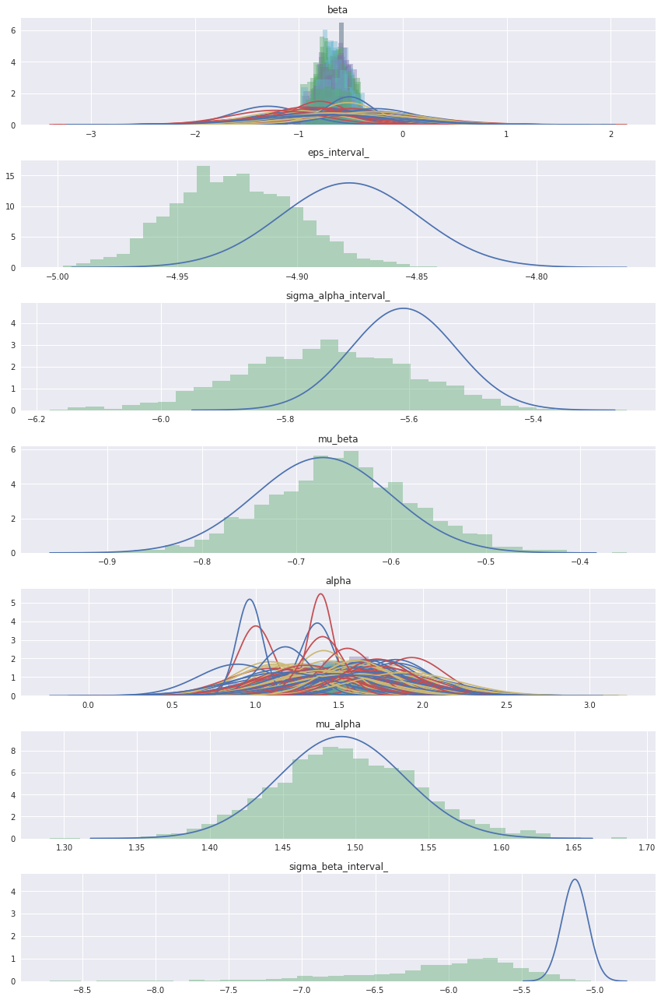

GLM: Mini-batch ADVI on hierarchical regression model¶
Unlike Gaussian mixture models, (hierarchical) regression models have independent variables. These variables affect the likelihood function, but are not random variables. When using mini-batch, we should take care of that.
In [1]:
%matplotlib inline
import theano
theano.config.floatX = 'float64'
import matplotlib.pyplot as plt
import numpy as np
import pymc3 as pm
import pandas as pd
data = pd.read_csv(pm.get_data('radon.csv'))
county_names = data.county.unique()
county_idx = data['county_code'].values
n_counties = len(data.county.unique())
Here, ‘log_radon_t’ is a dependent variable, while ‘floor_t’ and ‘county_idx_t’ determine independent variable.
In [2]:
import theano.tensor as tt
log_radon_t = tt.vector()
log_radon_t.tag.test_value = np.zeros(1)
floor_t = tt.vector()
floor_t.tag.test_value = np.zeros(1)
county_idx_t = tt.ivector()
county_idx_t.tag.test_value = np.zeros(1, dtype='int32')
minibatch_tensors = [log_radon_t, floor_t, county_idx_t]
In [3]:
with pm.Model() as hierarchical_model:
# Hyperpriors for group nodes
mu_a = pm.Normal('mu_alpha', mu=0., sd=100**2)
sigma_a = pm.Uniform('sigma_alpha', lower=0, upper=100)
mu_b = pm.Normal('mu_beta', mu=0., sd=100**2)
sigma_b = pm.Uniform('sigma_beta', lower=0, upper=100)
# Intercept for each county, distributed around group mean mu_a
# Above we just set mu and sd to a fixed value while here we
# plug in a common group distribution for all a and b (which are
# vectors of length n_counties).
a = pm.Normal('alpha', mu=mu_a, sd=sigma_a, shape=n_counties)
# Intercept for each county, distributed around group mean mu_a
b = pm.Normal('beta', mu=mu_b, sd=sigma_b, shape=n_counties)
# Model error
eps = pm.Uniform('eps', lower=0, upper=100)
# Model prediction of radon level
# a[county_idx] translates to a[0, 0, 0, 1, 1, ...],
# we thus link multiple household measures of a county
# to its coefficients.
radon_est = a[county_idx_t] + b[county_idx_t] * floor_t
# Data likelihood
radon_like = pm.Normal('radon_like', mu=radon_est, sd=eps, observed=log_radon_t)
Random variable ‘radon_like’, associated with ‘log_radon_t’, should be given to the function for ADVI to denote that as observations in the likelihood term.
In [4]:
minibatch_RVs = [radon_like]
On the other hand, ‘minibatches’ should include the three variables above.
In [5]:
def minibatch_gen(data):
rng = np.random.RandomState(0)
while True:
ixs = rng.randint(len(data), size=100)
yield data.log_radon.values[ixs],\
data.floor.values[ixs],\
data.county_code.values.astype('int32')[ixs]
minibatches = minibatch_gen(data)
total_size = len(data)
Then, run ADVI with mini-batch.
In [6]:
means, sds, elbos = pm.variational.advi_minibatch(
model=hierarchical_model, n=40000, minibatch_tensors=minibatch_tensors,
minibatch_RVs=minibatch_RVs, minibatches=minibatches,
total_size=total_size, learning_rate=1e-2, epsilon=1.0
)
Average ELBO = -1,113.44: 100%|██████████| 40000/40000 [00:18<00:00, 2135.78it/s]
Finished minibatch ADVI: ELBO = -1,037.40
Check the trace of ELBO and compare the result with MCMC.
In [7]:
import matplotlib.pyplot as plt
import seaborn as sns
plt.plot(elbos)
plt.ylim(-5000, 0);
/opt/conda/lib/python3.5/site-packages/matplotlib/font_manager.py:1297: UserWarning: findfont: Font family ['sans-serif'] not found. Falling back to DejaVu Sans
(prop.get_family(), self.defaultFamily[fontext]))

In [8]:
# Inference button (TM)!
with pm.Model():
# Hyperpriors for group nodes
mu_a = pm.Normal('mu_alpha', mu=0., sd=100**2)
sigma_a = pm.Uniform('sigma_alpha', lower=0, upper=100)
mu_b = pm.Normal('mu_beta', mu=0., sd=100**2)
sigma_b = pm.Uniform('sigma_beta', lower=0, upper=100)
# Intercept for each county, distributed around group mean mu_a
# Above we just set mu and sd to a fixed value while here we
# plug in a common group distribution for all a and b (which are
# vectors of length n_counties).
a = pm.Normal('alpha', mu=mu_a, sd=sigma_a, shape=n_counties)
# Intercept for each county, distributed around group mean mu_a
b = pm.Normal('beta', mu=mu_b, sd=sigma_b, shape=n_counties)
# Model error
eps = pm.Uniform('eps', lower=0, upper=100)
# Model prediction of radon level
# a[county_idx] translates to a[0, 0, 0, 1, 1, ...],
# we thus link multiple household measures of a county
# to its coefficients.
radon_est = a[county_idx] + b[county_idx] * data.floor.values
# Data likelihood
radon_like = pm.Normal(
'radon_like', mu=radon_est, sd=eps, observed=data.log_radon.values)
#start = pm.find_MAP()
step = pm.NUTS(scaling=means)
hierarchical_trace = pm.sample(2000, step, start=means, progressbar=False)
/home/jovyan/pymc3/pymc3/step_methods/hmc/nuts.py:237: UserWarning: Step size tuning was enabled throughout the whole trace. You might want to specify the number of tuning steps.
warnings.warn('Step size tuning was enabled throughout the whole '
/opt/conda/lib/python3.5/site-packages/numpy/core/fromnumeric.py:2889: RuntimeWarning: Mean of empty slice.
out=out, **kwargs)
In [9]:
from scipy import stats
import seaborn as sns
varnames = means.keys()
fig, axs = plt.subplots(nrows=len(varnames), figsize=(12, 18))
for var, ax in zip(varnames, axs):
mu_arr = means[var]
sigma_arr = sds[var]
ax.set_title(var)
for i, (mu, sigma) in enumerate(zip(mu_arr.flatten(), sigma_arr.flatten())):
sd3 = (-4*sigma + mu, 4*sigma + mu)
x = np.linspace(sd3[0], sd3[1], 300)
y = stats.norm(mu, sigma).pdf(x)
ax.plot(x, y)
if hierarchical_trace[var].ndim > 1:
t = hierarchical_trace[var][i]
else:
t = hierarchical_trace[var]
sns.distplot(t, kde=False, norm_hist=True, ax=ax)
fig.tight_layout()
/opt/conda/lib/python3.5/site-packages/matplotlib/font_manager.py:1297: UserWarning: findfont: Font family ['sans-serif'] not found. Falling back to DejaVu Sans
(prop.get_family(), self.defaultFamily[fontext]))

In [ ]: